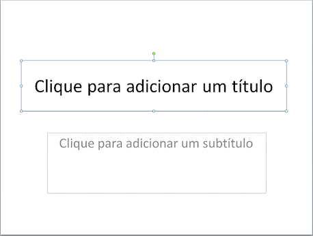
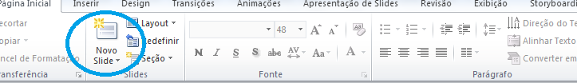

Bom, agora vamos estudar o Power Point. Nele, você consegue trabalhar na elaboração de apresentações.
Através da elaboração de slides, você consegue criar apresentações dos mais variados tipos, contando com estilizações, etc.
Alguns pontos serão explicados no decorrer da "fase", mas por ora vamos focar no básico.
Basicamente, uma apresentação feita no Power Point se dá através de slides (são as páginas de uma apresentação), e você consegue estilizar de diversas formas o seu layout.
O layout padrão é o seguinte, com título e subtítulo:
Porém, como foi dito, há diversas formas de estilização. Você pode adicionar temas aos slides, formatar letras, etc. Um exemplo seria o seguinte:
Ok...você criou uma apresentação, está com alguns slides. Para ver uma "prévia" da apresentação, basta apertar F5, que abre o modo tela cheia, o qual você consegue controlar a apresentação pelas setas do teclado.
Ps:Para adicionar slides à sua apresentação, basta apertar o seguinte botão:
